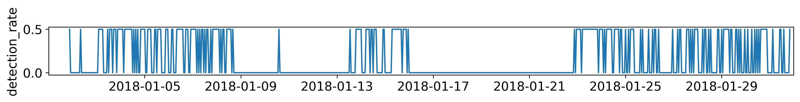
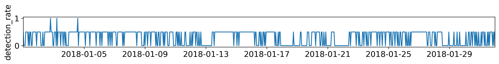
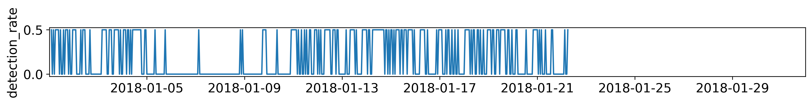

Northern Strait of Georgia — January 2018¶
This notebook walks through an example analysis of acoustic tracking performance using range test data from the Northern Strait of Georgia near Comox BC in January 2018.
In this notebook we will: * Load configuration settings from yaml files * Create a
Detections object by loading detection event data & receiver/transmitter deployment metadata, processing those detections, and adding in other environmental variables.* Generate visual reports to assist in analysing what factors drive a transmitter tag’s range.
Data Set Up¶
First off, we need to download the data files that we will be using in this notebook. Download the data folder from this SFU Vault link. Once the full folder has been downloaded place it in the same folder where this notebook is located. With this, your range-driver-tutorials/tutorials/NSOG_Jan2018 folder should contain 2 folders (configs & data) & 1 file (this notebook).
Imports¶
[1]:
import range_driver as rd
import pandas as pd
%matplotlib inline
rd.mpl_set_notebook_params()
Load configuration from YAML files¶
[2]:
baseconfig = rd.yload(rd.load_file("configs/base_config.yaml"))
viewconfig = rd.yload(rd.load_file("configs/view_config.yaml"))
rd.deep_update(baseconfig, viewconfig)
rawconfig = rd.yload(rd.load_file("configs/nsog_jan2018_config.yaml"))
config = rd.merge_dicts(baseconfig, rawconfig)
rd.prepare_config(config)
Read Detections, Metadata, and Environmental Variables¶
[3]:
dets = rd.Detections(config, do_processing=True)
Detail Reports¶
[4]:
rd.report_group_info(dets)
Detection rate plots for data screening¶
NSOG011P-VR3-144-1-144/tag-38034-U-L¶
| tstart | tend | count | min_interval | max_interval | Receiver/Transmitter | dist_m | Transmitter.Tag Family | Transmitter.ID | Transmitter.Power | Transmitter.Min delay | Transmitter.Max delay | Transmitter.Avg delay | ||
|---|---|---|---|---|---|---|---|---|---|---|---|---|---|---|
| NSOG011P-VR3-144-1-144 | A69-1601-38034 | 2018-01-01 21:33:04 | 2018-01-31 20:30:42 | 229 | 3419.0 | 597833.0 | NSOG011P-VR3-144-1-144/tag-38034-U-L | NaN | V16-5x | 38034 | L | 1700 | 1900 | 1800.0 |

NSOG012P-VR3-145-1-145/tag-38034-U-L¶
| tstart | tend | count | min_interval | max_interval | Receiver/Transmitter | dist_m | Transmitter.Tag Family | Transmitter.ID | Transmitter.Power | Transmitter.Min delay | Transmitter.Max delay | Transmitter.Avg delay | ||
|---|---|---|---|---|---|---|---|---|---|---|---|---|---|---|
| NSOG012P-VR3-145-1-145 | A69-1601-38034 | 2018-01-01 00:54:10 | 2018-01-31 23:46:41 | 454 | 3411.0 | 89220.0 | NSOG012P-VR3-145-1-145/tag-38034-U-L | NaN | V16-5x | 38034 | L | 1700 | 1900 | 1800.0 |

NSOG013P-VR3-336-1-336/tag-38034-U-L¶
| tstart | tend | count | min_interval | max_interval | Receiver/Transmitter | dist_m | Transmitter.Tag Family | Transmitter.ID | Transmitter.Power | Transmitter.Min delay | Transmitter.Max delay | Transmitter.Avg delay | ||
|---|---|---|---|---|---|---|---|---|---|---|---|---|---|---|
| NSOG013P-VR3-336-1-336 | A69-1601-38034 | 2018-01-01 02:03:19 | 2018-01-22 06:07:24 | 198 | 3414.0 | 147471.0 | NSOG013P-VR3-336-1-336/tag-38034-U-L | NaN | V16-5x | 38034 | L | 1700 | 1900 | 1800.0 |

NSOG010P-VR3-147-1-147/tag-38035-U-H¶
| tstart | tend | count | min_interval | max_interval | Receiver/Transmitter | dist_m | Transmitter.Tag Family | Transmitter.ID | Transmitter.Power | Transmitter.Min delay | Transmitter.Max delay | Transmitter.Avg delay | ||
|---|---|---|---|---|---|---|---|---|---|---|---|---|---|---|
| NSOG010P-VR3-147-1-147 | A69-1601-38035 | 2018-01-25 17:14:27 | 2018-01-28 05:53:02 | 3 | 14726.0 | 203589.0 | NSOG010P-VR3-147-1-147/tag-38035-U-H | NaN | V16-5x | 38035 | H | 1700 | 1900 | 1800.0 |

NSOG011P-VR3-144-1-144/tag-38035-U-H¶
| tstart | tend | count | min_interval | max_interval | Receiver/Transmitter | dist_m | Transmitter.Tag Family | Transmitter.ID | Transmitter.Power | Transmitter.Min delay | Transmitter.Max delay | Transmitter.Avg delay | ||
|---|---|---|---|---|---|---|---|---|---|---|---|---|---|---|
| NSOG011P-VR3-144-1-144 | A69-1601-38035 | 2018-01-01 00:03:56 | 2018-01-31 22:58:55 | 361 | 3409.0 | 158797.0 | NSOG011P-VR3-144-1-144/tag-38035-U-H | NaN | V16-5x | 38035 | H | 1700 | 1900 | 1800.0 |

NSOG012P-VR3-145-1-145/tag-38035-U-H¶
| tstart | tend | count | min_interval | max_interval | Receiver/Transmitter | dist_m | Transmitter.Tag Family | Transmitter.ID | Transmitter.Power | Transmitter.Min delay | Transmitter.Max delay | Transmitter.Avg delay | ||
|---|---|---|---|---|---|---|---|---|---|---|---|---|---|---|
| NSOG012P-VR3-145-1-145 | A69-1601-38035 | 2018-01-01 00:22:41 | 2018-01-31 21:18:51 | 568 | 3408.0 | 54966.0 | NSOG012P-VR3-145-1-145/tag-38035-U-H | NaN | V16-5x | 38035 | H | 1700 | 1900 | 1800.0 |

NSOG013P-VR3-336-1-336/tag-38035-U-H¶
| tstart | tend | count | min_interval | max_interval | Receiver/Transmitter | dist_m | Transmitter.Tag Family | Transmitter.ID | Transmitter.Power | Transmitter.Min delay | Transmitter.Max delay | Transmitter.Avg delay | ||
|---|---|---|---|---|---|---|---|---|---|---|---|---|---|---|
| NSOG013P-VR3-336-1-336 | A69-1601-38035 | 2018-01-01 01:32:31 | 2018-01-22 08:34:11 | 338 | 3408.0 | 25172.0 | NSOG013P-VR3-336-1-336/tag-38035-U-H | NaN | V16-5x | 38035 | H | 1700 | 1900 | 1800.0 |

Data Sources¶
[5]:
print(rd.kadlu_source_map())
print("Configured data sources:\n")
print(rd.ydump(config.data.sources))
CHS (Canadian Hydrography Service)
bathymetry: bathymetric data in Canada's waterways. metres, variable resolution
ERA5 (Global environmental dataset from Copernicus Climate Data Store)
wavedir: mean wave direction, degrees
waveheight: combined height of wind, waves, and swell. metres
waveperiod: mean wave period, seconds
wind_uv: wind speed computed as sqrt(u^2 + v^2) / 2, where u, v are direction vectors
wind_u: wind speed coordinate U-vector, m/s
wind_v: wind speed coordinate V-vector, m/s
GEBCO (General Bathymetric Chart of the Oceans)
bathymetry: global bathymetric and topographic data. metres below sea level
HYCOM (Hybrid Coordinate Ocean Model)
salinity: g/kg salt in water
temp: degrees celsius
water_uv: ocean current computed as sqrt(u^2 + v^2) / 2, where u, v are direction vectors
water_u: ocean current coordinate U-vector, m/s
water_v: ocean current coordinate V-vector, m/s
WWIII (WaveWatch Ocean Model Gen 3)
wavedir: primary wave direction, degrees
waveheight: combined height of wind and waves, metres
waveperiod: primary mean wave period, seconds
wind_uv: wind speed computed as sqrt(u^2 + v^2) / 2, where u, v are direction vectors
wind_u: wind speed coordinate U-vector, m/s
wind_v: wind speed coordinate V-vector, m/s
Configured data sources:
null
...
Maps visualization¶
Map view including region of interest bound, environmental data source nodes, receiver and tag locations.
[6]:
rd.report_map_view(dets)